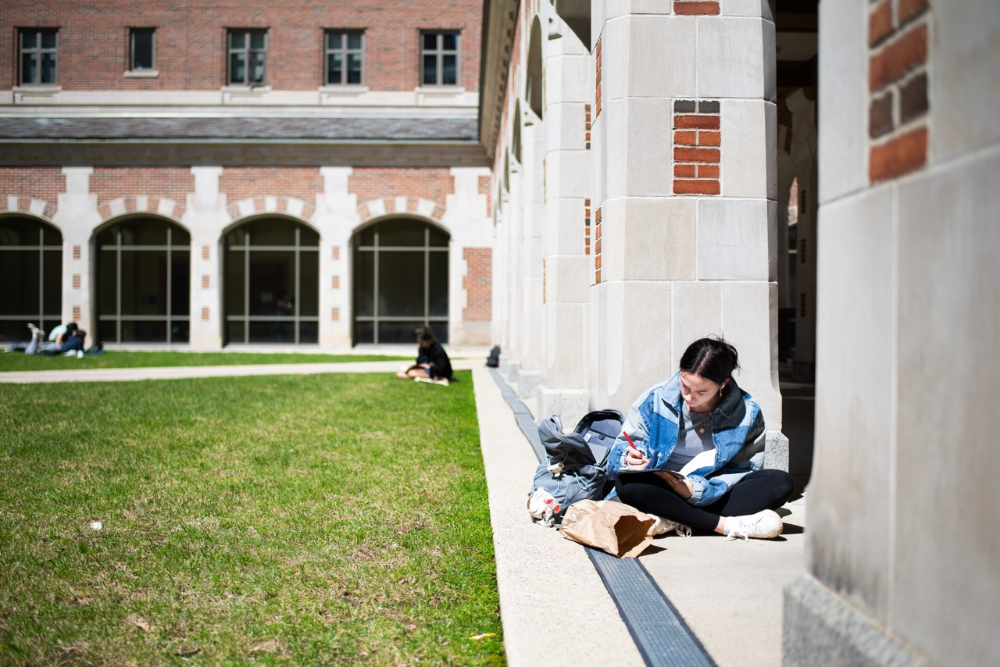
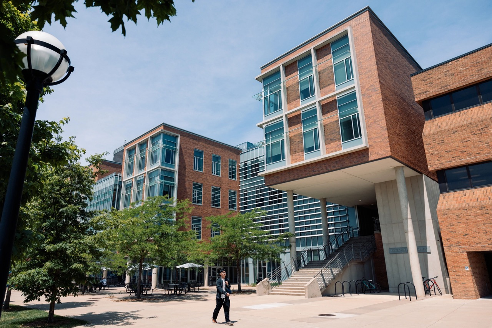

Study Spaces at U-M is a tool designed to help you find and reserve designated study spaces, computer stations, a space for you to take a remote class, or just a dedicated quiet touchdown spot between classes.
It's understandable that many might be anxious that there aren't many spaces on the site, after going through the last academic year where the primary method of accessing study space was to reserve.
Explore what's available and where
North Campus Library

Bob and Betty Beyster Building
- Bob and Betty Beyster Building(BBB)
- Climate and Space Research Building (CSRB)
- Electrical Engineering And Compputer Science Building (EECS)
- Ford Motor Company Robotics Building (FMCRB)
- George G.Brown Laboratories (GG Brown)
- James and Anne Duderstady Center (DC)
- Lurie Biomedical Engineering Building (LBME)
- North Campus Research Complex (NCRC)
Central Campus Library

- Sharpio Undergraduate Library
- Hatcher Graduate Library
- CVGA
- Taubman Health Sciences Library
- Hatcher Donor Carrels